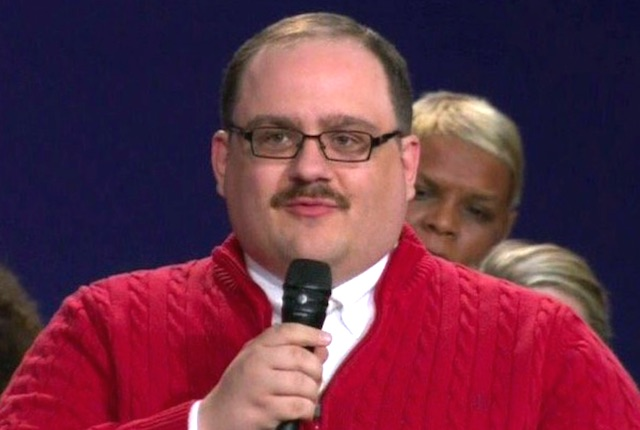

Ken Bone is a man who asked a question during the second 2016 United States Presidential Election Debate, which had a town hall format in which selected undecided voters ask questions directly to the candidates. Bone asked a question about the candidates’ energy policies, but because of his name and appearance, he immediately became popular on social media as users joked about him and engaged in ironic fandom.
